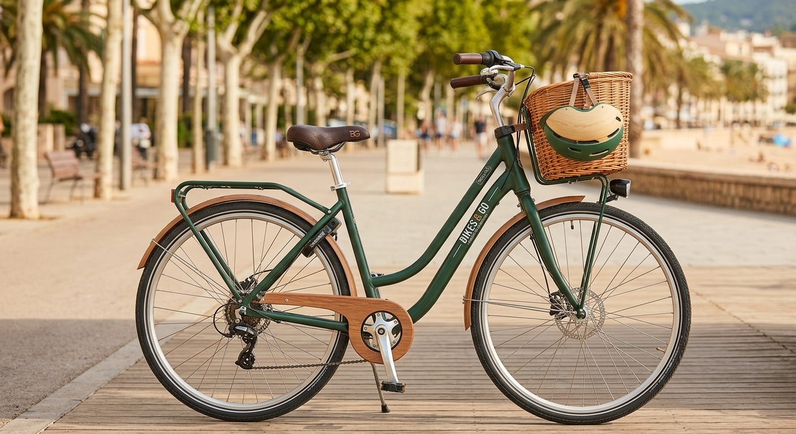
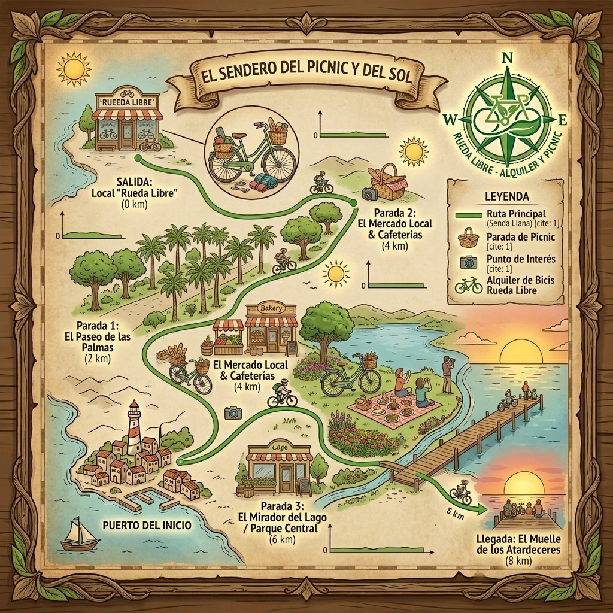
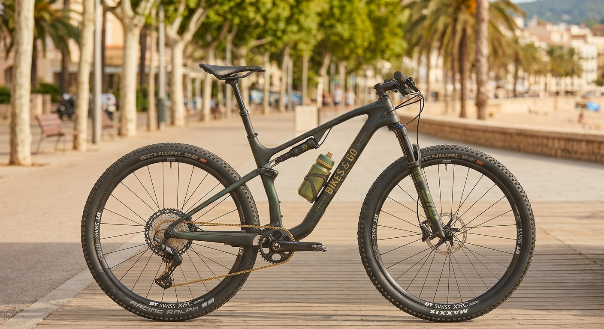
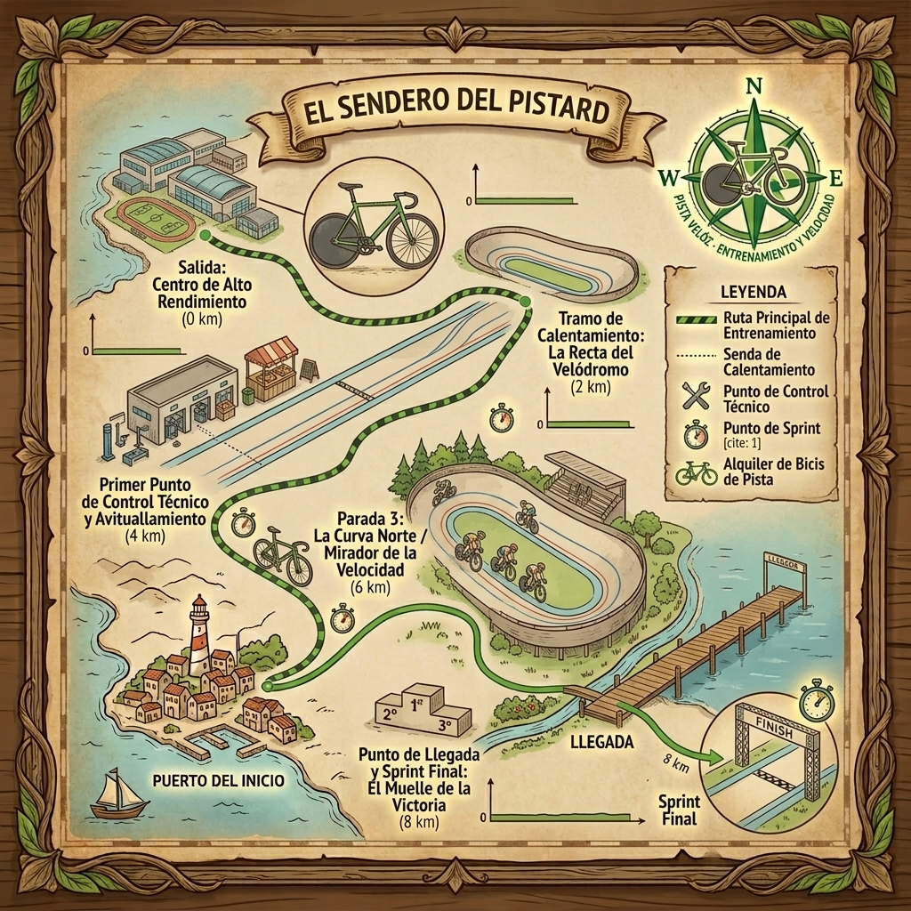

Rueda Libre | Alquiler de bicicletas en Medellín
Alquiler de bicicletas en Medellín , No perdamos tiempor Encuéntranos!!!

Nuestros servicios
Cada bicileta cuenta con su ruta personalizada casco y candado .
Alquiler de bicicletas urbanas y su ruta


Alquiler de bicicletas de montaña y su ruta

 Alquiler de bicicletas para pista y su ruta
Alquiler de bicicletas para pista y su ruta


¿Cómo alquilar?
Si deseas alquilar una bicicleta, puedes hacerlo en estos 4 simples pasos:
- Visítanos en nuestra tienda ubicada en Medellín y elige la bicicleta que más te guste.
- Realiza tu reserva en línea a través de nuestro sitio web o en nuestra sucursal fisica.
- Firma el contrato de alquiler y recoge la bicicleta en nuestra tienda.
- conoce al guia de ruta y listo!!!! Estas preparado para disfrutar de tu experiencia en bicicleta.
Tarifas
Tabla de precios de alquiler de bicicletas: Ver tabla de precios
Tabla de información de los recorridos: Ver tabla de información
¿Quiénes somos?
Rueda Libre es una tienda de alquiler de bicicletas en Medellín, dedicada a ofrecer experiencias únicas para los amantes del ciclismo. Nuestro objetivo es promover un estilo de vida saludable y sostenible, brindando a nuestros clientes la oportunidad de explorar la ciudad y sus alrededores de una manera divertida y ecológica.
Estos son 3 veneficios de alquilar una bicicleta con nosotros:
Promovemos la actividad física y el bienestar.
Contribuimos a la reducción de la contaminación y el tráfico en la ciudad.
Ofrecemos una experiencia única y memorable para nuestros clientes.
Encuéntranos
Dirección: Calle 10 # 20-30, Medellín, Colombia
Teléfono: +57 123 456 7890
Correo electrónico: info@ruedalibre.com